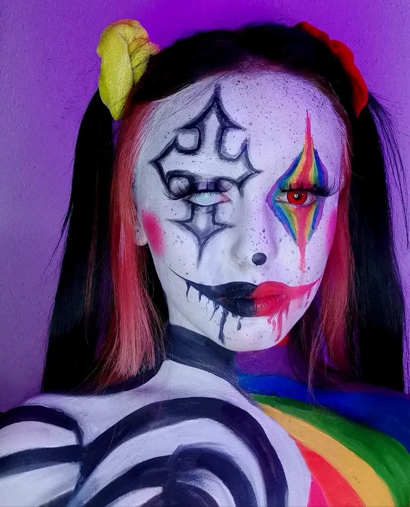
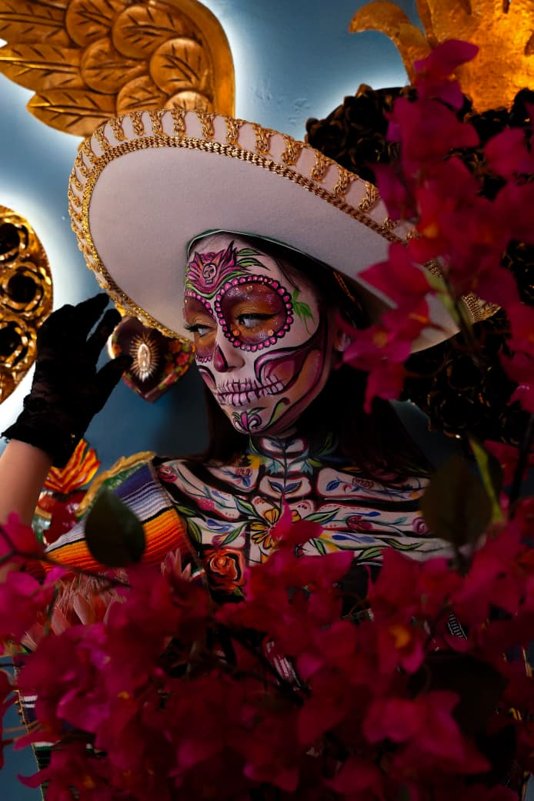
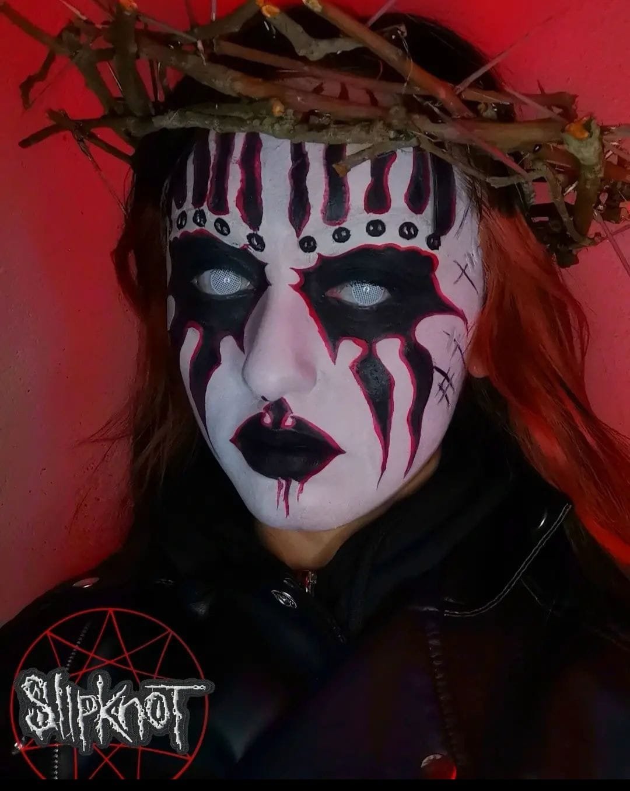
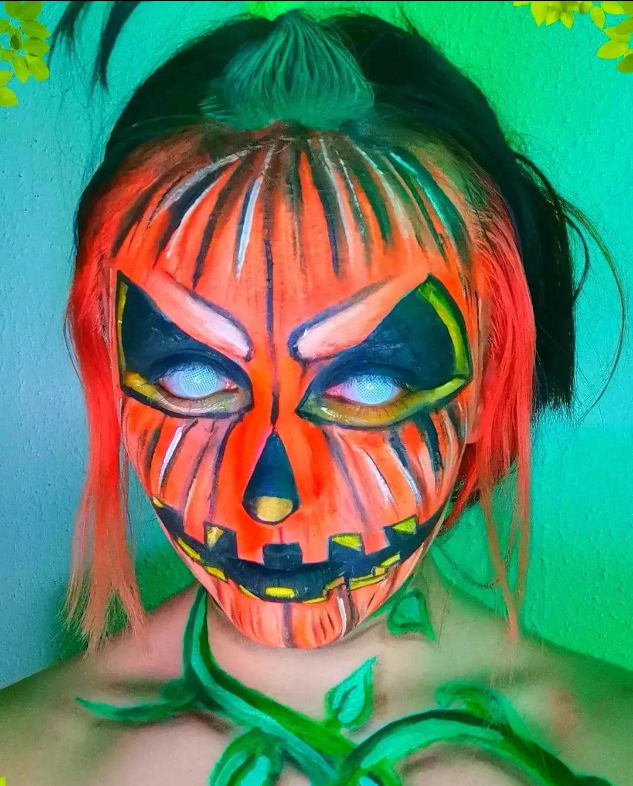
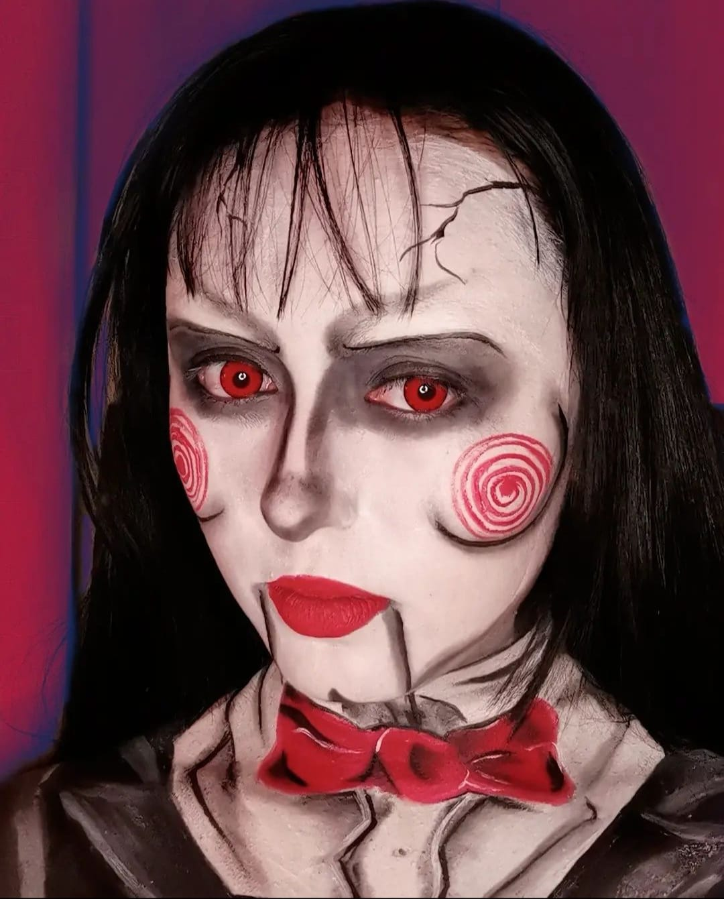
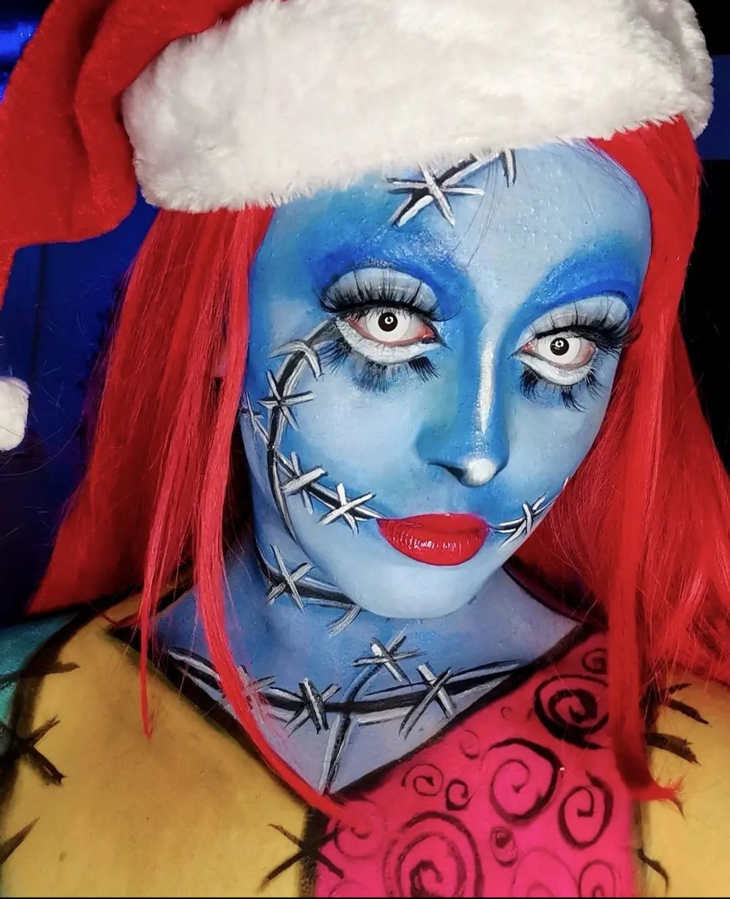
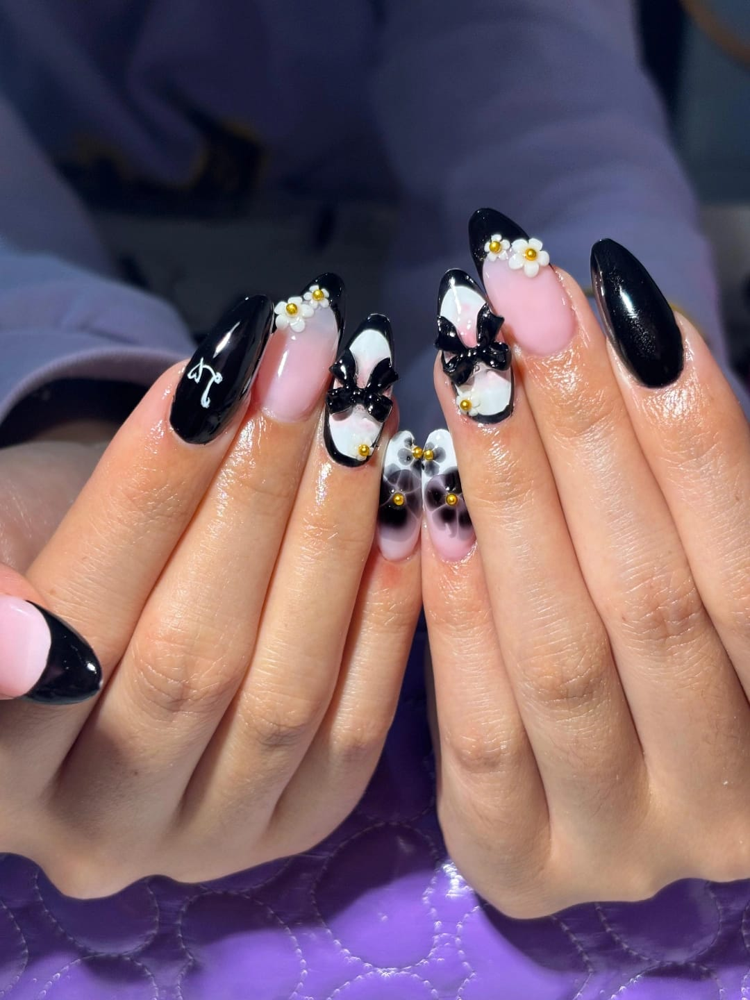
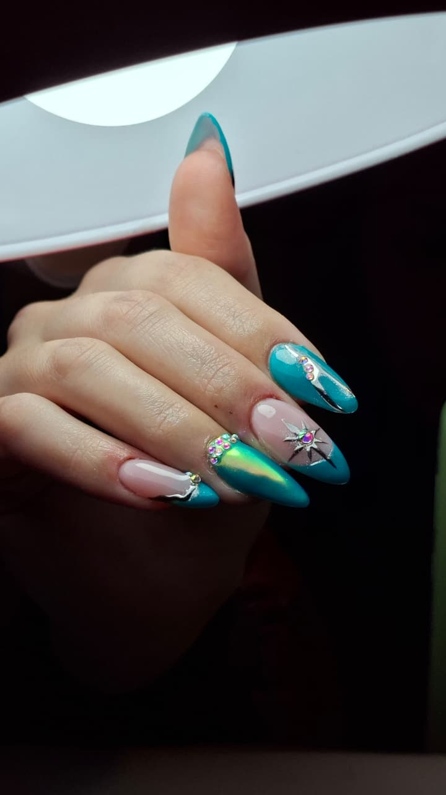
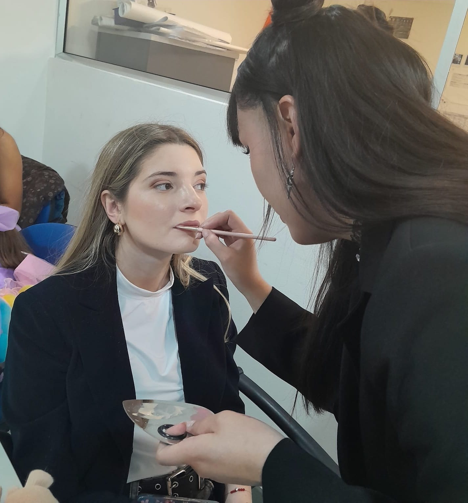
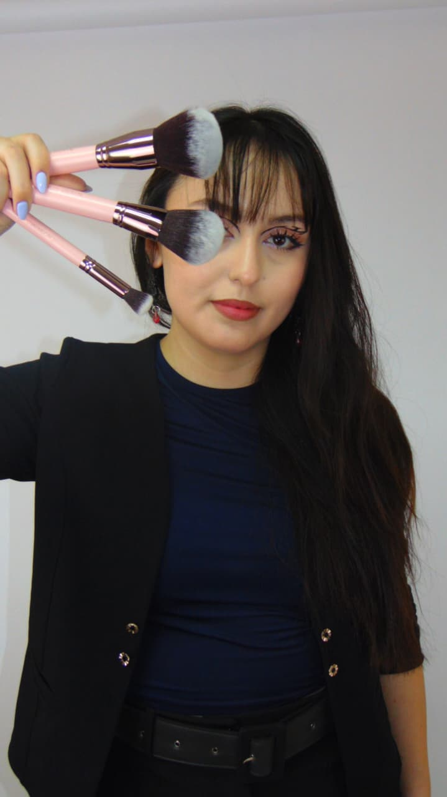

01 / 04

FantasíaColor como identidad
Makeup Artist · Nail Artist
El arte también se lleva en la piel.
No simplemente
maquilla.
Crea.
Maquillaje, caracterización y nail art desde una mirada creativa y personal.
Descubrir el maquillaje ↘Caracterización · Fantasía · Personajes


El rostro como lienzo. Cada personaje nace de una idea y encuentra su propia forma.

La piel como superficie creativa
Cada trazo cambia la expresión. Cada color abre un personaje.
Crear algo juntas ↗Una secuencia de personajes



Forma · Textura · Detalle
Las manos también cuentan una historia. Diseños pensados para mirar de cerca.


Más allá de una sola mirada
Una selección de proyectos, rostros y detalles.
Pamplona · España
Maquillaje, caracterización y nail art desde una mirada creativa y personal.
Cada trabajo comienza con una idea y termina convirtiéndose en algo único.
Hablemos ↗¿Tienes una idea?
Belleza para momentos reales
Tu versión
más tú.
Maquillaje de eventos y ocasiones especiales que acompaña, realza y se siente propio.
Ver más trabajos ↘
En el proceso